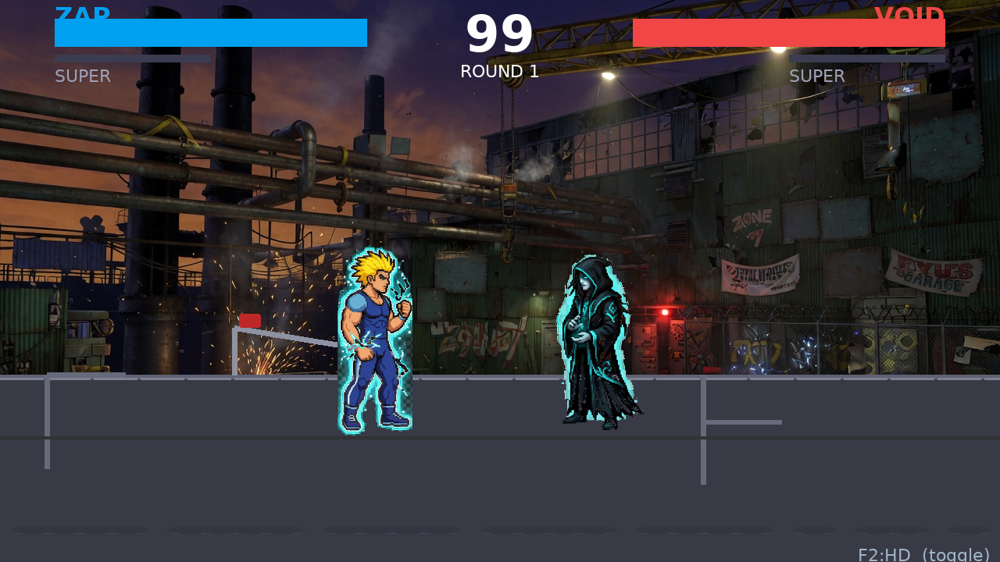
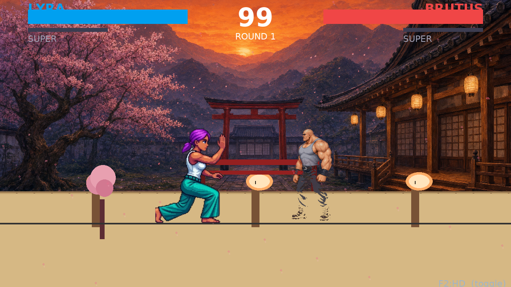
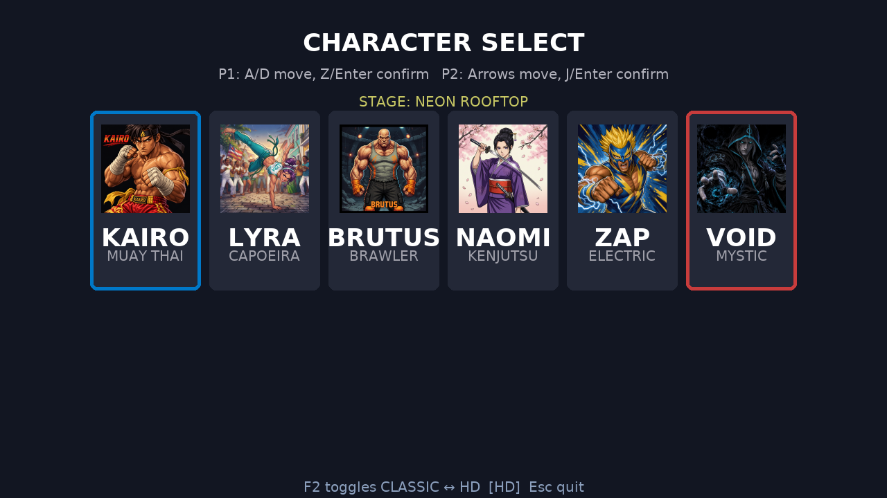
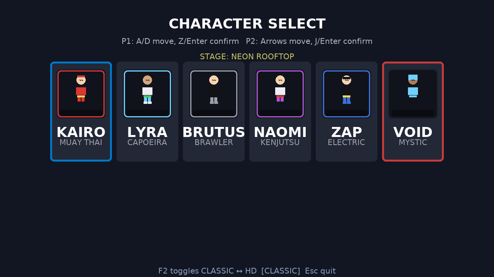

Previous videos had 3 characters (Brutus/Void/Zap) corrupted — each 192×256 frame showed 5 tiny figures because white/checker backgrounds weren't keyed and sheets weren't centered. This is the fixed build: all 6 idle sheets re-sliced from your original AI selections (4640×928 Kairo, 1408×768 Void/Naomi, 2048×2048 Zap etc.) with flood-fill background removal + center-scale to 192×256, and all 16 moves per fighter rebuilt (98 sprites, 68-284K each vs old 2-5K placeholders). Close camera (340 vs 940) so HD fills screen.
HD detail: Kairo's red shorts + white wraps, Void's teal aura and hood folds — single figure per frame, no white box. 1.5M rooftop bg.
Industrial 1.7M bg, ZAP's spiky yellow hair + blue sparks, NAOMI's purple kimono + katana — all 60fps.
Temple 1.9M bg, Lyra's purple hair + teal pants, Brutus's heavy tank frame — hitstop flash + screen shake on HP.
Pause video and compare — no pixelation, brush texture visible

KAIRO HP → VOID HIT — Rooftop — Kairo single figure, Void single figure with translucent cloak

ZAP vs VOID — Industrial — both with electric/cyan auras, sparks hit-effect

LYRA vs BRUTUS — Temple — Lyra kick vs Brutus block (note: Brutus hit legs show faint hit-flash — intentional red tint)

HD portraits 128×128 AI • CLASSIC 96×128 procedural

Previous broken videos (for comparison): videos.html (old 30fps placeholders) | videos_hd_true.html (half-fixed)
In-game: Press F2 anytime to toggle CLASSIC (96×128) ↔ HD (192×256 AI) — see bottom-right F2:HD indicator